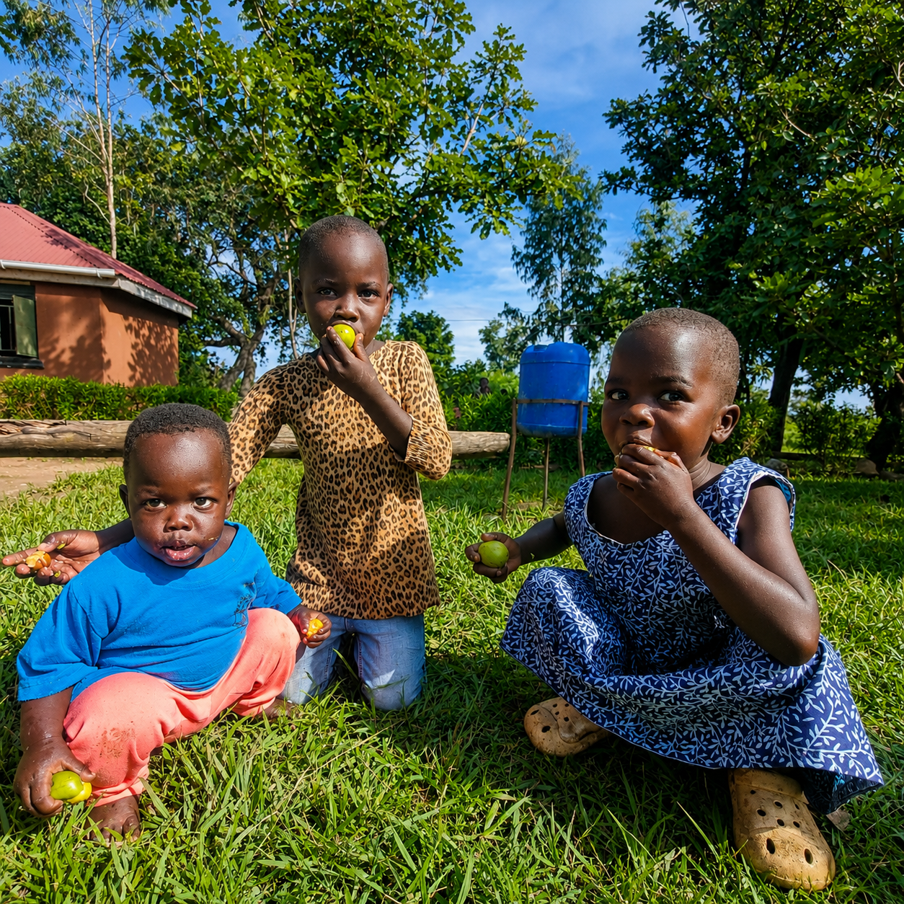

Making a Difference
Our Impact
Real numbers, real lives, real change in Otuke District.
0
Smallholder Farmers
Supported with seedlings and training.
0
Cooperative Members
Women leading the shea value chain.
0
Lives Transformed
Through education, health and income.
0
Trees Planted
Reforestation across Otuke District.
Where It Goes
Your Support in Action
Adult Literacy
120 elders learning to read and write, gaining independence.
Community School
150 children receiving quality education with sponsorship options.
Shea Tree Nursery
5,000+ trees raised and planted for future harvests.
Women's Health
Health education and resources for women across Okere.
Sustainability
Built to Last Generations
The shea tree lives for 200 years. Our cooperative is designed to match that lifespan — passing knowledge, income, and stewardship from mother to daughter.
Every jar of Okere Shea is traceable to specific trees, specific harvesters, and specific communities. This transparency is our promise to you.
Shop & Support